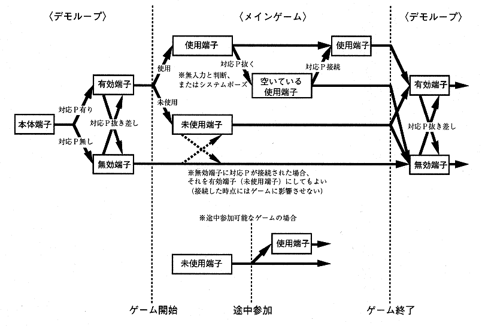

Return to previous page | Return to menu | Go to next page
For input peripherals (corresponding P) that can be used in applications, the following principles in accordance with 〈Pad Setting Principles〉 of “Software Creation Criteria” must be observed.
| ・ If the corresponding P is not connected to the terminal 1, do not start the game. ・ In principle, the main body terminal 1 corresponds to 1P operation, and the main body terminal 2 corresponds to 2P operation. |
As a general rule, check as often as possible while the power is on, and at the very least deal with it so as not to run out of control .
Refer to the following recommended specifications for what kind of check is performed at which timing.
《Recommended Specifications》
| (a) Check before starting |
◆ Check for compatible P (valid terminal registration)
* Especially for applications that do not support a mouse, be careful not to cause unstable operation when a mouse is connected.
* In multiplayer games with different start timings for each player (possible participation during the course), check frequently at every timing, including in the main game.
| (b) Check at start |
◆ Start application
* In multiplayer games where participation is possible, it may be possible to start from other than 1P.
* In a multiplayer game, each player may be allowed to play the content individually set.
◆ Determining the terminal used
* Terminals that exceed the maximum number of players are not selected.
| (c) Check in main game |
◆ Check for insertion / removal
(i) When removed
* “System Pause” can be released from any use P when the removed use P is returned (when the application determines that it is ready to be used again).
* If the system pose shifts to “system pose” during user pose, the user pose will be automatically canceled when “system pose” is canceled. (For example, when a peripheral is pulled out during user pause)
(ii) When connected
* Even when a use P other than the extracted use P is returned, if it is a corresponding P, input is resumed.
(iii) When added
* Re-determine the terminal to be used at the following timing.
* Terminals that exceed the maximum number of players are not selected.
The terminal state transitions based on the checks so far are shown below.

When an application is associated with each input peripheral, it must be able to be operated with CONTROL PAD, except in special cases. Therefore, at a minimum, the optional control setting (CONTROL) must correspond to both input peripherals (CONTROL PAD and each corresponding input peripheral). Follow the following rules to make the options correspond to each input peripheral.
If it is necessary to display the name of each input peripheral in the game, in principle, it should be unified with the name used in this creation standard.
Multi terminal Racing controller Shuttle mouse (mouse) etc.
(1. Basic items, finished)